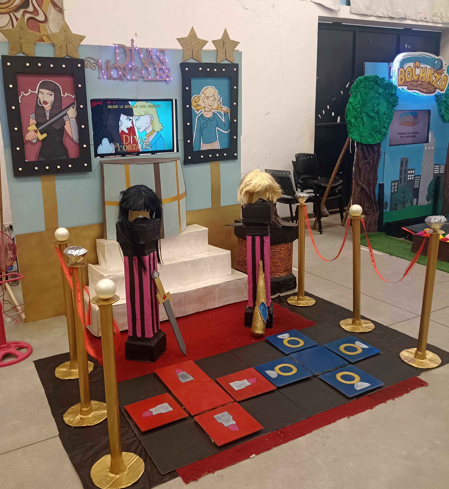

About me
I am a second- year student in the Muldimedia Design bachelor's program at the UNLP Faculty of Arts, taking my first steps into the world of design. Below are the projects I completed during the 2025 academic year.
Development of each project
- Video Game: A group project in wich we created a combat- style video game featuring two Argentine Divas. My contribution was in the area of design (Logo and HUD).
- Application redesign: A group project in wich we redesigned the homepage and the search section, and created a Watch Party feature. My contribution was the creation of the Watch Party.
- Web project "Manifestation through neuroscience": A landing page created by me, inspired by the book "Breaking the Habit of Being Yourself" by Joe Dispenza.
- OpArt using custom functions and a for loop in p5.js: Interactive OpArt piece using for-loops and custom functions.
Result
Video Game "Divas Mortales":

Video Game Logo

Video Game front page
Video Game in operation

Archigraphia
Aplication Redesign:
Web project "Manifestation through neuroscience"
OpArt using custom functions and a for loop in p5.js: